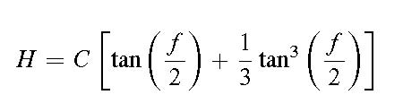

DAVID G. SIMPSON
Nanopedia
| Home |
| Blog |
| Personal |
| Professional |
| Software |
| Photos |
| Reference |
| Nanopedia |
| Wiki |
| Contact Me |
| NASA Site |
| PGCC Site |
| SCHS Site |
| Esperanto |
| Moon Rocks |
| S-M Comics |
| Mouse Site |
| Art Gallery |
BARKER'S TABLES
Barker's tables are tables used to solve Barker's equation for parabolic orbits in celestial mechanics. They are tables of the quantity H defined by [1] [2] where f is the true anomaly and C is a tabulation constant that depends on the author of the table. Using Barker's tables “in reverse” allows one to find the true anomaly f given the right-hand side of Barker's equation: one finds the right-hand side value in the table to find the value of f corresponds to this value. Interpolation between the tabulated values gives higher accuracy.
All tables give values of f from 0° to 180°. If time t is before the time of pericenter passage T0, then (t-T0) will be negative. Look up the absolute value of the quantity indicated in the table, and the true anomaly will be the negative of the angle found in the table. The true anomaly f will therefore range from 0° to 180° for times after pericenter passage, and -180° to 0° for times before pericenter passage.
Several compilations of Barker's tables exist:
- Table VI in Watson (Ref. [3]). Watson uses C = 75, and his tabulation is at intervals of 1' in f.
- Tafel IV in Oppolzer (Ref. [4]). Oppolzer uses C = √2/k, where k = 0.01720209895 is the Gaussian gravitational constant. Oppolzer's tabulation is at intervals of 10" in f.
- Several modern computer-generated tabulations exist (Ref. [5]).
Example
For example, Comet Barnard (1889 III) has a perihelion distance of 1.102 AU. Find its position 3 years after perihelion passage, assuming a parabolic orbit.Solution. Here t-T0 is 1095.75 days. Dividing this by (1.102 AU)3/2 gives 947.1943. Looking this up in Oppolzer's version of Barker's tables gives roughly f = 142° 33' 55".
References
[1] S.W. McCuskey. Introduction to Celestial Mechanics. Addison-Wesley, Reading, Mass., 1963.[2] K.P. Williams. The Calculation of the Orbits of Asteroids and Comets. Principia Press, Bloomington, Ind., 1934.
[3] J.C. Watson. Theoretical Astronomy. Lippincott, 1868.
[4] T.R. Oppolzer. Lehrbuch zur Bahnbestimmung der Kometen und Planeten I. Leipzig, Berlin, 1882.
[5] http://www.davidgsimpson.com/ref/barkers.html
Contact Information
I may be contacted at: